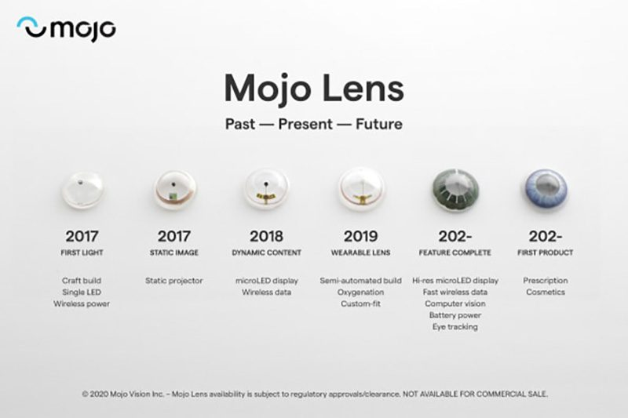
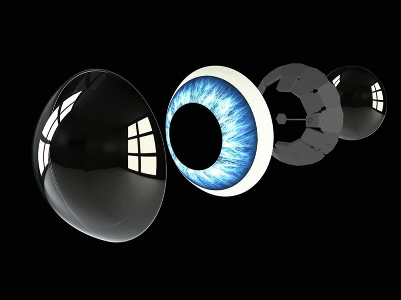

Inicio

Introduccion
Nuestro equipo de desarrolladores liderados por Steve Sinclair han embaucado durante estos ultimos años eun una gran aventura que por fin ha recogido sus frutos ya que se encuentran en la ultima fase de uno de nuestros mayores proyectos, Mojo Lense 06 de Noviembre de 2022
Mojo Lense
Nuestro producto se trata de una lentilla inteligente, que tiene funcionalidades de AR Display (Dispositivo de realidad aumentada). Creemos que es la primera lentilla inteligente que existe.
Contacto
Ayudanos a crecer

Saratoga, California
+34 945565465